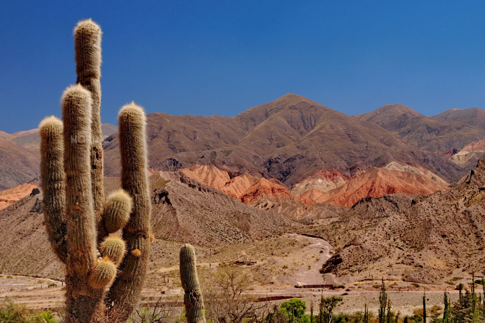
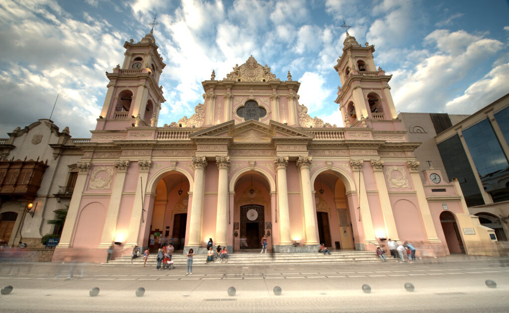

En Turismo Sustentable te ofrecemos experiencias únicas que combinan naturaleza, cultura y espiritualidad.
Descubrí nuestros paquetes diseñados para conectar con la esencia de Cafayate de manera responsable y auténtica.
Cada una de nuestras propuestas está pensada para que vivas Cafayate de una forma auténtica, respetando el entorno natural y valorando las tradiciones que hacen único a este destino.
Sumate a caminatas guiadas entre formaciones rocosas únicas, ideales para disfrutar de la naturaleza y la fotografía de paisajes.
Ingresa para obtener más informacián sobre el paquete completo.
IngresarViví la tradición cafayateña a través de retiros espirituales, música y evangelización local junto a misioneros JAR y familias de la zona.
Ingresa para obtener más informacián sobre el paquete completo.
IngresarConoce "la Sentadita" patrona de Prelatura cafayateña, recorrido por la Catedral y las capillas, guiado por el obispo de la ciudad.
Ingresa para obtener más informacián sobre el paquete completo.
IngresarAdemás de los paquetes destacados, ofrecemos una variedad de servicios adicionales para complementar tu experiencia en Cafayate:
Visita a la Bodega Domingo Hermanos, podras probar vinos exclusivos y algunos directamente de tanques.
Ingresa para obtener más informacián sobre el paquete completo.
IngresarVisita a la finca Cabras de Cafayate, pordrás degustar y conocer el proceso productivo de quesos de especialidad.
Ingresa para obtener más informacián sobre el paquete completo.
IngresarSumate a los streamings de la radio local "La Sentadita, la voz de tu parroquia", dirigido por jóvenes misioneros.
Ingresa para obtener más informacián sobre el paquete completo.
IngresarTSjarargentina@gmail.com. También podés visitarnos en nuestra oficina ubicada en San Andres, Buenos Aires.
Si estás interesado en alguno de nuestros servicios o necesitas más información, no dudes en contactarnos.
También puedes contactarnos a través de nuestras redes sociales o por correo electrónico.